У большинства всех систем виртуальной реальности есть (во всяком случае, должны быть), следующие основные характеристики.:
Создание любой серьезной игры начинается с выбора движка для нее. Вариантов много, от простых платформ для встраиваемых 2D-проектов и до фреймворков для тайтлов AAA-класса. Выбрать среди них однозначно лучший игровой движок для создания своего проекта невозможно. Каждый инструмент хорош в своей области. С каким SDK работать – определяют:
Чтобы выбрать игровой движок для 2D- или 3D-игры было проще, предлагаем подборку из нескольких хороших и бесплатных (полностью или условно) SDK для геймдева.
Unity – это кроссплатформенный SDK для разработки игр с двухмерной и трехмерной графикой, распространяемый по условно бесплатной модели. Использовать его можно безвозмездно, но на разработчика накладываются ограничения (доход не более $100 тыс. в год). Движок умеет работать с API DirectX, OpenGL, для работы с физикой задействован PhysX. Скрипты пишутся на C#.
Unity обладает интуитивно-понятным интерфейсом и прост в освоении. Движок использует компонентно-ориентированный подход. Он поддерживает модульность при разработке игр и упрощает подключение объектов. На движке возможна разработка игр любого жанра с графикой любого уровня. Но хоть выбор стандартных предустановленных решений и велик, интеграция внешних библиотек затруднена.
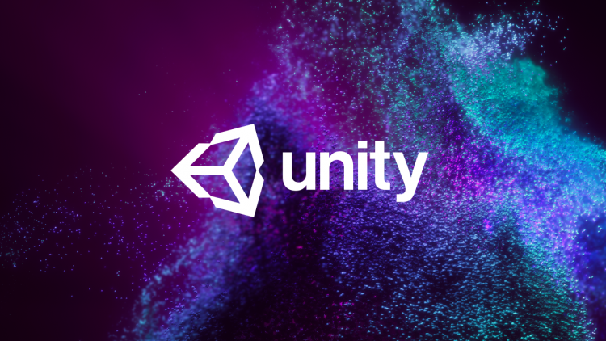
Преимущества Unity
К достоинствам движка относятся:
Недостатки Unity
В число минусов фреймворка входят:
Unreal Engine – игровой движок компании Epic Games, ориентированный на ААА-проекты и проекты в 3D. Он условно бесплатен при некоммерческом применении, но если проект приносит больше $3 тыс. в квартал – разработчикам движка нужно платить авторские отчисления в размере 5% от выручки. Первое, о чем стоит упомянуть в обзоре UE, это, конечно, графический потенциал, включающий поддержку даже DirectX 12. Нельзя забывать о кроссплатформенности этого SDK: на нем можно создавать игры для ПК, консолей, смартфонов, планшетов.
Unreal дает разработчику большой набор простых в освоении и интуитивно понятных инструментов. C++ накладывает минимум ограничений во время написания скриптов, а система визуального программирования Blueprint облегчает прототипирование или написание скриптов руками новичков. Создавать элементы игры можно наглядно, перемещая объекты, без ручного ввода кода.
В фирменном магазине доступен ассортимент готовых шаблонных решений. Они подойдут разработчикам, заинтересованным в быстром завершении игрового проекта. Среди прочих особенностей SDK – регулярные обновления, крупное сообщество и поддержка разработчиков.

Плюсы Unreal Engine
К преимуществам UE относятся:
Минусы Unreal Engine
Недостатки игрового движка:
CryEngine – это кроссплатформенный игровой движок для проектов стационарных платформ (ПК, консолей). Он распространяется по бесплатной модели, с роялти при преодолении порога выручки $5 тыс., но предлагается оформление платной подписки для расширенной поддержки. В этом SDK упор сделан на визуальную составляющую, основная сфера его применения – производство игр с 3D, использующих современные API для графики.
В CryEngine встроен простой визуальный редактор игровых элементов, позволяющий увидеть, как объекты будут смотреться в готовой игре. Поддерживается простое редактирование графических элементов, импорт моделей из редакторов (Maya, 3DS Max). Скриптовая система построена на Lua, известном многим представителям геймдева по легендарным S.T.A.L.K.E.R. и WoW.
Для оптимизации аппаратных нагрузок предусмотрена техника Geometry Instancing. Дополнительно из достоинств CryEngine стоит выделить поддержку инструментов ИИ, проработанные графические эффекты, систему звукового сопровождения.
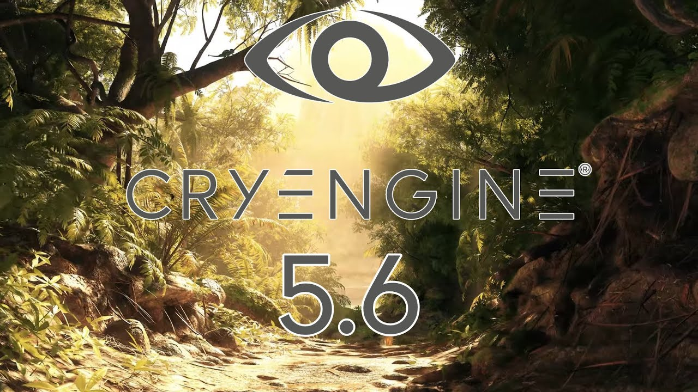
Плюсы CryEngine
Преимущества CryEngine:
Минусы CryEngine
Главные недостатки CryEngine:
Corona – игровой движок для двухмерных игр, позиционируемый его авторами как «самая продвинутая платформа для создания 2D-программ в мире». Это бесплатный фреймворк, заточенный под написание приложений для мобильных и стационарных платформ. Он использует широко известный язык Lua, отличающийся простотой освоения и универсализмом. Модульная конфигурация поддерживает подключение внешних API и расширений. В магазине доступно более двух сотен плагинов, отвечающих за эффекты, аналитику, мультимедиа, интеграцию рекламы и другие функции во время разработки ПО.
Встроенный симулятор поддерживает просмотр результатов труда разработчика и может тестировать примененные решения в режиме реального времени. Система Live Build обеспечивает тесты разрабатываемой программы без ручной установки, так как обновление выполняется автоматически.
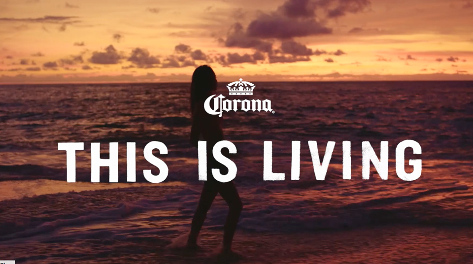
Плюсы Corona
Преимущества игрового движка:
Минусы Corona
К недостаткам фреймворка относятся:
libGDX – популярный в среде разработчиков мобильных программ кроссплатформенный фреймворк, использующий C++ и Java. Он полностью бесплатен и поддерживает популярные современные ОС. Это инструмент для продвинутых девелоперов, так как без развитых навыков программирования в нем никак. Зато он поддерживает работу с 2D и 3D, умеет работать с подключаемыми модулями и библиотеками.
SDK предлагает встроенную библиотеку элементов UI, которые можно использовать в составе своей программы. Проекты, созданные в libGDX, имеют модульную архитектуру, благодаря чему можно собирать игры на основе основного модуля ядра с подключением специфичных отдельных модулей для каждой платформы (Windows, Android, Linux и т.д.).
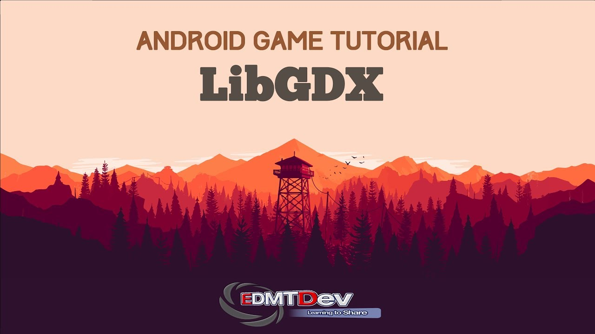
Плюсы libGDX
Плюсы фреймворка – это:
Минусы libGDX
Недостатки движка:
Defold – еще один бесплатный кроссплатформенный движок для игровых программ. Он имеет визуальный редактор, предназначенный для создания 2D-игр с использованием языка Lua. Фреймворк отличается простыми инструментами для управления GUI и GO, подчиняемым редактором, широкими возможностями по работе с анимацией. Поддерживается командная разработка, для этого предусмотрена система доступа к проекту разрешенных пользователей.
С точки зрения использования аппаратных ресурсов Defold отличается небольшими размерами создаваемых программ и высокой производительностью даже на слабых устройствах. У движка имеется развитое сообщество, которое оперативно поможет в разрешении вопросов и проблем.

Плюсы Defold
К преимуществам фреймворка относятся:
Минусы Defold
Недостатками SDK можно назвать:
Закрывает подборку бесплатных игровых движков очень условно бесплатный Construct 2. Даром можно воспользоваться только пробной версией SDK, имеющей ограничения по количеству событий и эффектов в создаваемом проекте. Полноценная персональная лицензия стоит $130, а коммерческая — $430. Но упомянуть его стоит. Ведь этот набор инструментов для разработки игр в 2D подойдет даже людям, не имеющим навыков в программировании.
Проекты, созданные с использованием Construct 2, работают на основе HTML5 и могут воспроизводиться практически на любой современной платформе. Сам редактор функционирует на C++, созданный код преобразуется в JS. Предусмотрена возможность ручной правки кода. Она пригодится для пользователей, разбирающихся в программировании. Благодаря этому можно как минимум ознакомиться с возможностями движка, чтобы решить, стоит ли использовать его в реализации своего коммерческого проекта или лучше искать альтернативу.

Плюсы Construct 2
Плюсы движка:
Минусы Construct 2
Заключение
В зависимости от того, какие требования выдвигает ТЗ проекта, и происходит выбор оптимального решения. Ведь для простенькой мобильной 2D-игрушки под Android выбор будет одним, а для масштабного продукта с реалистичной графикой, заточенного под консоли последнего поколения или ПК, – совсем другой. Поэтому однозначно решить, какой из представленных бесплатных игровых движков лучший, позволит только анализ требований к проекту, который вы разрабатываете, и собственных навыков.
ВР-разработчики предпочитают использовать игровые движки, самые популярные из которых Unreal Engine и Unity. Не смотря на определенную схожесть данных движков, они имеют фундаментальную разницу. Unreal Engine появился в 1998 году и был предназначен для создания конкретных игр с использованием всех возможностей компьютера. Unity же был создан позже в 2005 как многофункциональный движок для различных платформ.
Для того, чтобы что-то создать в Unreal Engine необходимо знать язык С++ и сам движок, для Unity же можно не знакомится с языком программирования С#, но познакомится с движком, который позволит сделать что угодно без программирования. В Unity включены объекты, компоненты, базовые сценарии и моделей материалов, однако, для того, чтобы создать свою логику, необходимо написать свой скрипт. Минус движка в том, что исходные коды закрыты, а также присутствуют некоторые проблемы с масштабированием объектов на различных устройствах.
В Unreal Engine есть много специализированных вложенных редакторов, некоторые из которых сравнимы по функционалу с целыми программами. Бесплатно можно получить полнофункциональный редактор. Движок устанавливается вместе с исходным кодом, что позволяет с легкостью разобраться в системе и исправлять какие-либо проблемы. Минус Unreal Engine – отсутствие дополнительной информации о движке, языке С++, различных макросах и функциях.
Требование интерактивности является опциональным: в некоторых VR-системах человек выступает только в роли наблюдателя, но и это бывает весьма полезно и интересно. VR-системы даже иногда делят на интерактивные и не интерактивные. Работа с последними больше напоминает просмотр стереоскопического видеофильма, так как пользователь не может повлиять на то, что происходит в виртуальном мире. Конечно, возможности «погружения» у такой VR куда скромнее, чем у полностью интерактивной виртуальной среды, но при достаточно больших экранах и качественных спецэффектах впечатление от таких демонстраций остается неизгладимым.
Основными сферами применения виртуальной реальности являются: развлечения (компьютерные игры), профессиональное обучение (тренажеры и симуляторы для летчиков, космонавтов, спасателей, врачей, водителей крупных автомобилей), образование (образовательные системы для детей) и конструирование (космические аппараты, машины, строительные объекты, виртуальные миры), моделирование ситуаций (отработка штатных или аварийных ситуаций и катастроф, устранение последствий), путешествия (виртуальные туры и экскурсии).
Практически в любой системе виртуальной реальности можно найти следующие компоненты:
Основа виртуальной реальности - создание иллюзии присутствия человека в виртуальной обстановке. Человек «уходит» в нее, отождествляет себя с персонажем, «живет» в этой игре. Обеспечит ли данная система полное погружение человека в виртуальную среду, во многом зависит также от системы отображения.
В то же время многие виды работы с трехмерными объектами могут и не требовать «погружения» человека в мир этого объекта. К примеру, при конструировании деталей сложной конфигурации или моделировании игровых персонажей обычно достаточно возможности манипулирования объемным изображением конструируемого объекта на экране монитор компьютера.
Иллюзия присутствия в виртуальном мире может быть значительно усилена за счет создания объемного стереоскопического изображения этого мира. Системы виртуальной реальности создают стереоскопическое трехмерное изображение за счет разделения картинок, предназначенных для левого и правого глаза. В результате, благодаря окулярности зрения у человек формируется ощущение объемности окружающего пространства, он может определять взаимное расположение предметов и также оценивать расстояния до них.
Известны следующие основные типы систем отображения для создания трехмерной виртуальной среды.
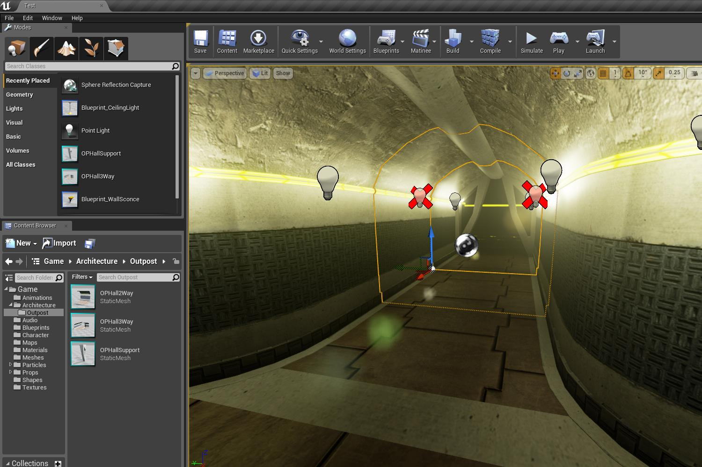
Unreal Engine 4 — это набор инструментов для разработки игр, имеющий широкие возможности: от создания двухмерных игр на мобильные до AAA-проектов для консолей. Этот движок использовался при разработке таких игр, как ARK: Survival Evolved, Tekken 7 и Kingdom Hearts III.
Разработка в Unreal Engine 4 очень проста для начинающих. С помощью системы визуального создания скриптов Blueprints Visual Scripting можно создавать готовые игры, не написав ни строчки кода! В сочетании с удобным интерфейсом это позволяет быстро изготавливать рабочие прототипы.
В этой части туториала по Unreal Engine 4 мы ознакомимся с основными возможностями программы. Вот основные темы, которые будут в нём рассмотрены:
Мы изучим все эти возможности на примере поворотного столика, на котором лежит банан.
Для установки Unreal Engine 4 используется Epic Games Launcher. Перейдите на сайт Unreal Engine и нажмите на кнопку Get Unreal в правом верхнем углу.

Перед загрузкой программы запуска необходимо будет создать учётную запись. После её создания скачайте программу запуска, соответствующую вашей операционной системе.
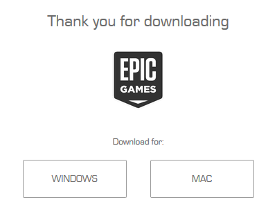
После скачивания и установки программы запуска откройте её. Появится следующее окно:
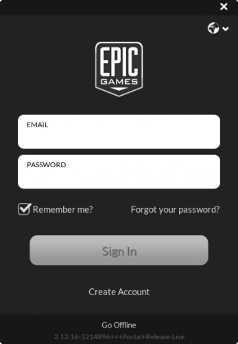
Введите адрес электронной почты и пароль, использованный для скачивания программы загрузки и нажмите на Sign In. После выполнения входа откроется такое окно:

Нажмите на Install Engine в левом верхнем углу. Программа запуска перейдёт к экрану, на котором можно будет выбрать устанавливаемые компоненты.
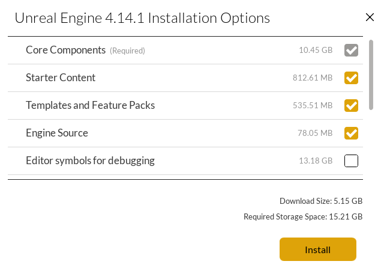
Примечание: Epic Games постоянно обновляет Unreal Engine, поэтому ваша версия движка может слегка отличаться от представленной на скриншотах. Например, после написания первого черновика этого туториала версия уже обновилась до 4.14.3! Туториал подойдёт вам, если у вас есть версия не ниже 4.14.
По умолчанию выбраны Starter Content, Templates and Feature Packs и Engine Source. Лучше так всё и оставить. Они будут полезны по следующим причинам:
Под списком есть список возможных платформ. Если не планируете разрабатывать игру под конкретную платформу, то можете спокойно снять все флажки.
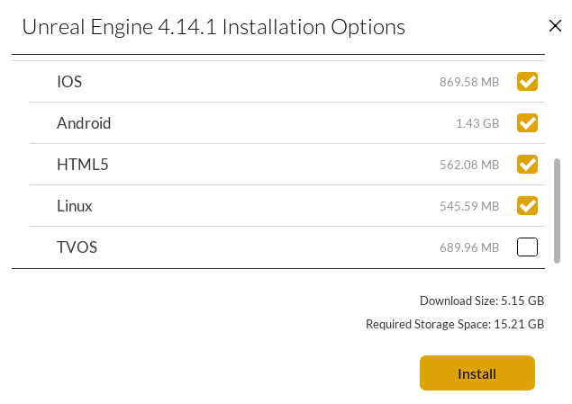
Выбрав нужные компоненты, нажмите на Install. После завершения установки движок появится в библиотеке. Теперь настало время создать проект.
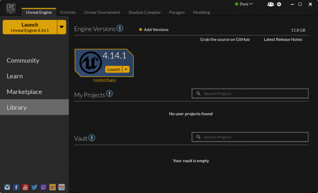
Нажмите на одну из кнопок Launch, чтобы открыть браузер проектов (Project Browser). После его открытия нажмите на вкладку New Project.
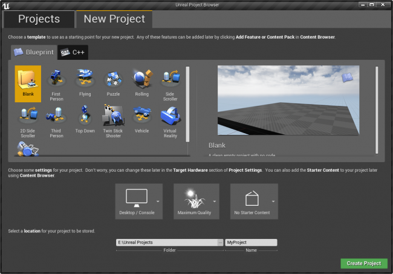
Нажмите на вкладку Blueprint. Здесь можно выбрать один из шаблонов. Однако, поскольку мы начинаем с нуля, то выберем шаблон Blank.
Ниже будут перечисленные дополнительные параметры.
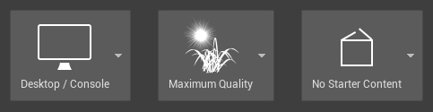
Вот, за что отвечает каждая опция:
Кроме того, здесь есть раздел для выбора местоположения папки проекта и имени проекта.
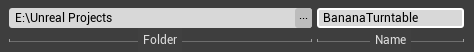
Сменить папку хранения проекта можно, нажав на многоточие в конце поля Folder.
Имя проекта не является названием игры, так что не волнуйтесь, если хотите название позже. Выберите текст в поле Name и введите BananaTurntable.
И наконец нажмите на Create Project.
После создания проекта откроется редактор. Он разделён на несколько панелей:
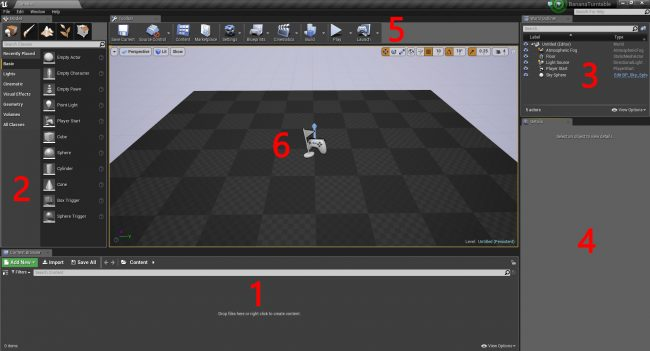
Какой смысл в поворотном столе, если на нём нечего показывать? Скачайте эту модель банана. Внутри находятся два файла: Banana_Model.fbx и Banana_Texture.jpg. Можете также использовать собственную модель, но зачем, если есть такой потрясающий банан?
Чтобы Unreal мог использовать файлы, их нужно импортировать. Перейдите в Content Browser и нажмите на Import.
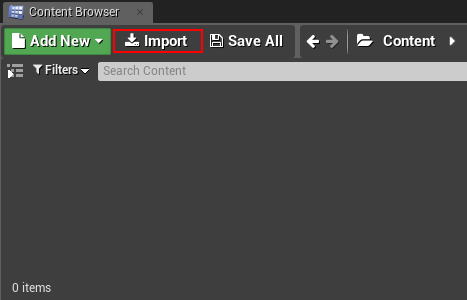
С помощью диспетчера файлов найдите папку, в которой находятся Banana_Model.fbx и Banana_Texture.jpg are. Выделите оба файла и нажмите Open.
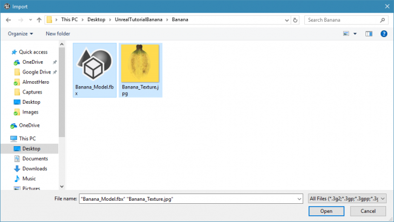
Unreal предложит несколько вариантов импорта файла .fbx. Снимите флажок Import Materials, потому что мы будем создавать собственный материал. Остальные параметры можно не менять.
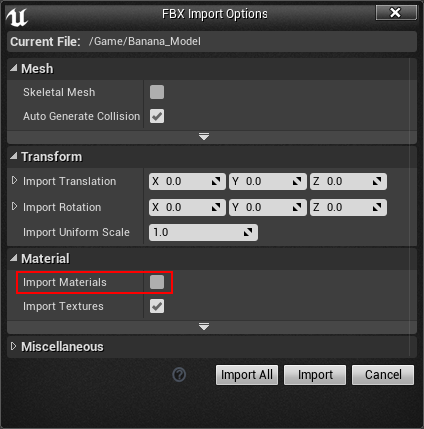
Нажмите на Import. Два файла появятся в Content Browser.
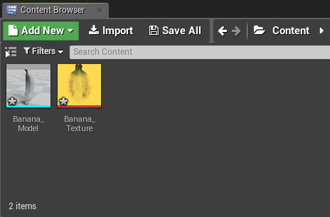
При импорте файла на самом деле он не сохраняется в проект, если не указать этого явным образом. Сохранять файлы можно, нажав на файл правой клавишей мыши и выбрав Save. Также можно сохранить все файлы за раз, выбрав File\Save All. Старайтесь сохраняться почаще!
Учтите, что в Unreal модели называются «мешами» (meshes). Теперь у нас есть меш банана, настало время добавить его на уровень.
Пока уровень выглядит довольно пустым, давайте сделаем его интереснее.
Чтобы добавить на уровень меш, нажмите правой клавишу мыши и перетащите Banana_Model из Content Browser во Viewport. Отпустите левую клавишу мыши и меш добавится на уровень.
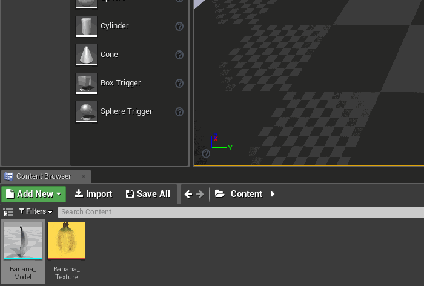
Объекты на уровне можно перемещать, поворачивать и масштабировать. Горячие клавиши для этих действий — W, E и R. После нажатия на них можно использовать манипулятор:
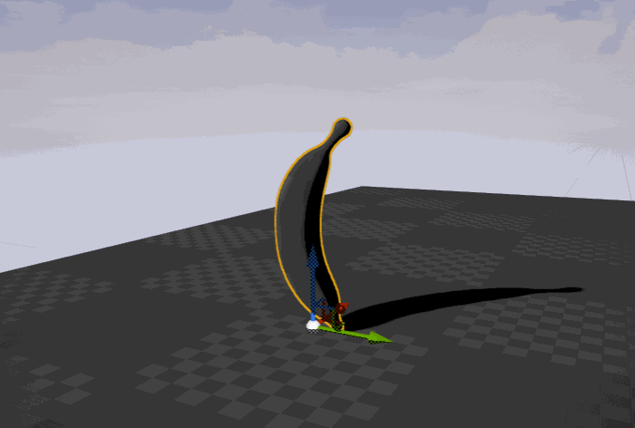
Если внимательно посмотреть на банан, то можно увидеть, что он не жёлтый! На самом деле. он выглядит почти полностью серым.
Чтобы придать банану цвет и детали, необходимо создать материал.
Что такое «материал»?
Ниже представлен пример трёх различных материалов. Они имеют одинаковый цвет, но разные атрибуты. Каждый материал имеет высокое значение соответствующего атрибута. Значение остальных атрибутов равно нулю.
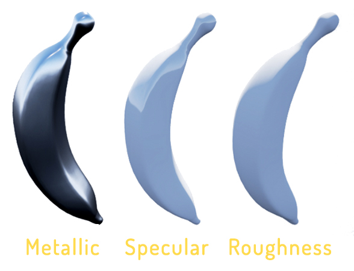
Для создания материала нужно перейти в Content Browser и нажать на зелёную кнопку Add New. Появится меню со списком ассетов, которые можно создать. Выберите Material.
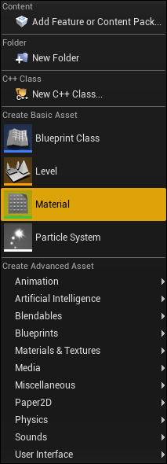
Назовите материал Banana_Material, а затем дважды нажмите левой клавишей мыши на файле, чтобы открыть его в редакторе материалов.
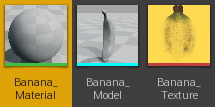
Редактор материалов состоит из пяти основных панелей:
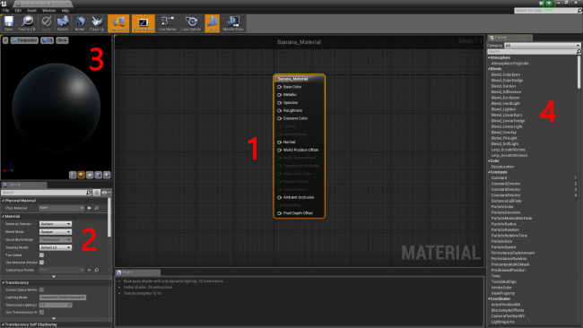
Прежде чем приступать к созданию своего материала, нужно узнать про объекты, которые используются для его создания: ноды.
Ноды составляют бОльшую часть материала. Существует множество типов нодов, имеющих различные функции.
У нодов есть входы и выходы, представленные кругом со стрелкой. Входы расположены слева, а выходы — справа.
Вот пример с использованием нодов Multiply и Constant3Vector, добавляющих текстуре жёлтого цвета:
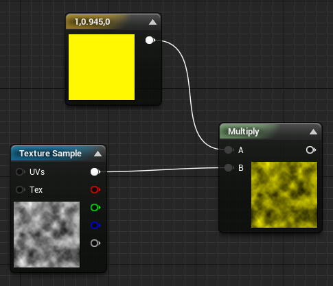
У материалов есть особый нод, называемый нодом Result, который в нашем случае уже создан как Banana_Material. Здесь заканчиваются со временем все ноды. То, что подключено к этому ноду, определяет внешний вид конечного материала.
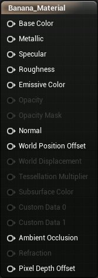
Для добавления модели цвета и деталей нам необходима текстура. Текстура — это просто двухмерное изображение. Обычно они проецируются на трёхмерные модели, придавая им цвет и детали.
Для текстурирования банана мы используем Banana_Texture.jpg. Применить в материале текстуру позволяет нод TextureSample.
Перейдите к панели Palette и найдите TextureSample. Добавьте нод, удерживая левую клавишу мыши и перетащив его на схему.
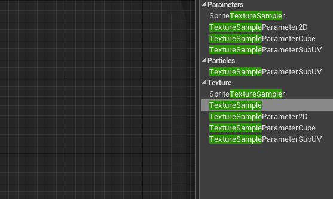
Для выбора текстуры необходимо сначала выделить нод TextureSample. Перейдите в панель Details и нажмите на раскрывающийся список, расположенный справа от Texture.
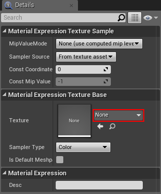
Откроется меню, в котором перечислены все текстуры проекта. Выберите Banana_Texture.
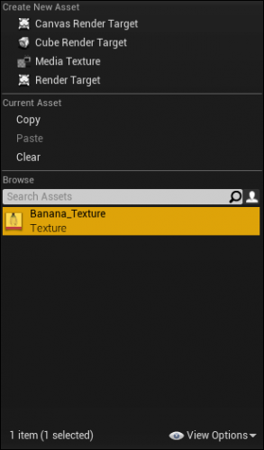
Чтобы увидеть текстуру на меше предварительного просмотра, нужно подключить её к ноду Result. Удерживайте левую клавишу мыши на белом контакте выхода нода TextureSample. Перетащите его на входной контакт Base Color нода Result.
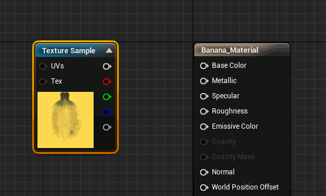
Вернитесь во Viewport, чтобы увидеть текстуру на меше предварительного просмотра. Можно поворачивать его (удерживая левую клавишу мыши и перемещая мышь), чтобы рассмотреть другие детали.
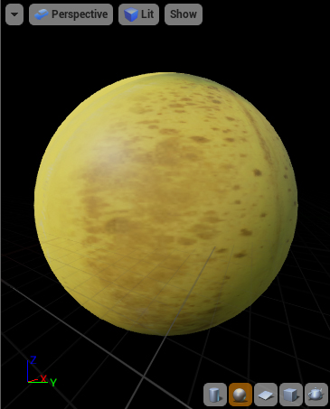
Нажмите на Apply в Toolbar, чтобы обновить материал, и закройте редактор материалов после завершения.
Чтобы применить материал на банан, нужно его назначить. Вернитесь к Content Browser и дважды нажмите на Banana_Model, чтобы открыть его. Появится следующее окно редактора:
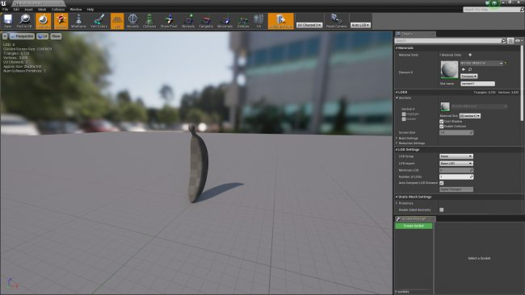
Перейдите в панель Details и найдите раздел Materials. Нажмите на раскрывающееся меню, расположенное справа от Element 0, и выберите Banana_Material.
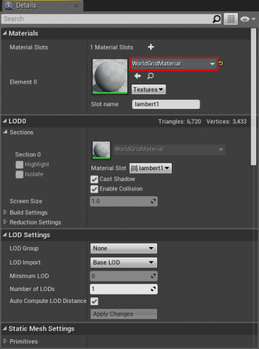
Закройте редактор мешей, вернитесь к основному редактору и посмотрите на Viewport. Вы увидите, что теперь на банане есть текстура. Поздравляю, вы теперь знаете всё необходимео, чтобы стать дизайнером уровней!
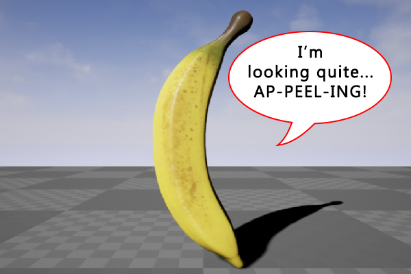
Примечание: если освещение слишком тёмное, можно изменить его, зайдя в World Outliner и нажав на Light Source. В панели Details найдите параметр Intensity и увеличьте его значение.
Даже несмотря на то, что банан выглядит отлично, будет ещё лучше, если он начнёт вращаться на поворотном столе. Проще всего создать его с помощью «чертежей» Blueprints.
В простейшем случае Blueprint представляет собой «вещь». Blueprints позволяют создавать свои поведения для объектов. Объект может быть чем-то физическим (типа поворотного стола) или чем-то абстрактным, например, системой здоровья.
Хотите создать движущийся автомобиль? Используйте Blueprint. А как насчёт летающей свинки? Используйте Blueprints. А если нужен взрывающийся при касании котик? Blueprints.
Как и в материалах, в Blueprints используется система на основе нодов. Это значит, что достаточно создать ноды и соединить их — никакого кода не требуется!
Примечание: если вы предпочитаете писать код, то используйте вместо этого C++.
Blueprints просты в использовании, однако не так быстры, как код на C++. То есть если вам нужно создать что-то «тяжёлое» с точки зрения вычислений, например, сложный алгоритм, то лучше воспользоваться C++.
Но даже если вы предпочитаете C++, то бывают случаи, когда оптимальнее использовать Blueprints. Вот некоторые из преимуществ Blueprints:
Хорошим подходом будет создание объектов с помощью Blueprints. А когда требуются дополнительные возможности, преобразование их в C++.
Перейдите в Content Browser и нажмите на Add New. Выберите в списке Blueprint Class.
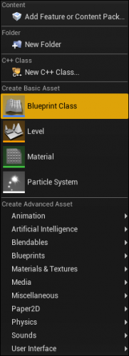
Откроется окно с запросом выбора родительского класса. Ваш Blueprint будет наследовать все переменные, функции и компоненты из выбранного родительского класса. Уделите время на изучение возможностей каждого класса.
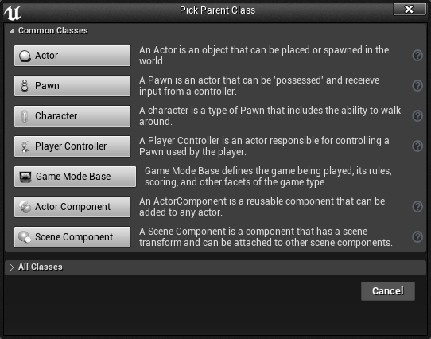
Примечание: поскольку мы можем расположить классы Pawn и Character, они также являются акторами (Actors).
Поворотный стол будет находиться на месте, поэтому самым подходящим будет класс Actor. Выберите Actor и назовите новый файл Banana_Blueprint.
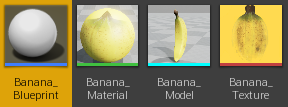
Дважды нажмите на Banana_Blueprint, чтобы открыть его. Нажмите на Open Full Blueprint Editor, если появится подобное окно:
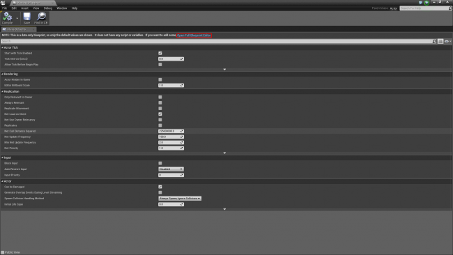
Во-первых, выберите в редакторе Blueprint editor вкладку Event Graph.
Blueprint editor состоит из четырёх основных панелей:
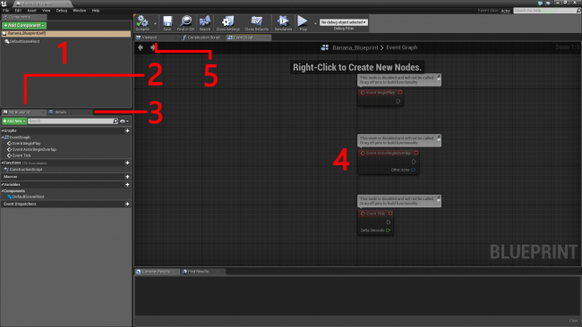
Для создания стола нам нужно две вещи — основание и подставка. Их можно создать с помощью компонентов.
Если Blueprint — это автомобиль, то компоненты — это строительные элементы, из которых он состоит. Примерами компонентов могут быть двери, колёса и двигатель.
Однако компоненты могут быть не только физическими объектами.
Например, чтобы автомобиль мог двигаться, можно добавить компонент движения. Можно даже заставить машину летать, если добавить компонент полёта.
Чтобы увидеть компоненты, необходимо переключиться в режим Viewport. Нажмите на вкладку Viewport, чтобы переключиться на неё. Вот как это выглядит:
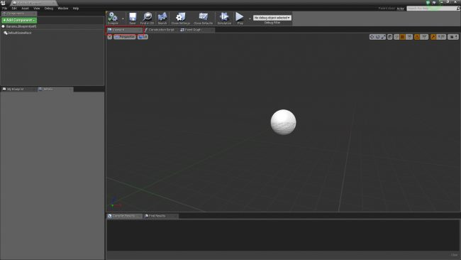
Примечание: компонент DefaultSceneRoot при запуске приложения не отображается, он виден только в редакторе.
Поворотный стол будет использовать два компонента:
Чтобы добавить основание, перейдите в панель Components. Нажмите на Add Component и выберите Cylinder.
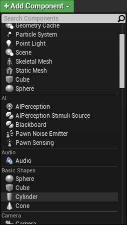
Неплохо было бы сделать основание чуть короче. Активируйте манипулятор масштаба, нажав R, а затем уменьшите масштаб (точный размер неважен, можно будет изменить его позже).

Теперь пора добавить меш. Вернитесь в панель компонентов Components и нажмите левой клавишей на пустой области, чтобы снять выделение с компонента Cylinder. Благодаря этому следующий добавляемый компонент не будет прикреплён к компонентуCylinder.
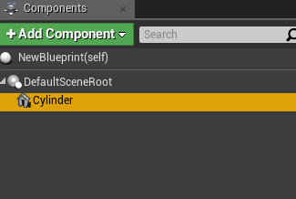
Примечание: если этого не сделать, то следующий компонент будет прикреплён к компоненту Cylinder. Это значит, что он также унаследует масштаб компонента Cylinder. Поскольку мы уменьшили масштаб цилиндра, следующий компонент тоже будет уменьшен.
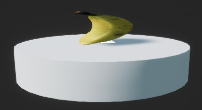
Затем нажмите на Add Component и выберите из списка Static Mesh.
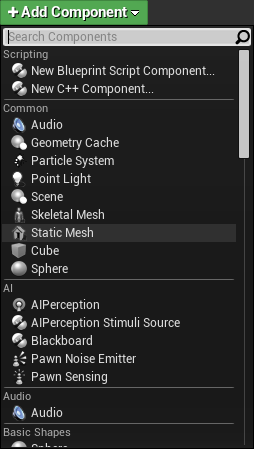
Для отображения банана выберите компонент Static Mesh, а затем нажмите на вкладку Details. Нажмите на раскрывающий списков в правой части Static Mesh и выберите Banana_Model.
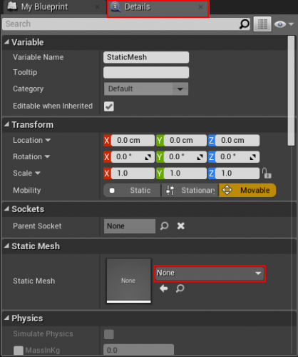
Переместите банан, если он находится в неправильном положении. Для этого активируйте манипулятор перемещения, нажав W, а затем переместите его вверх.
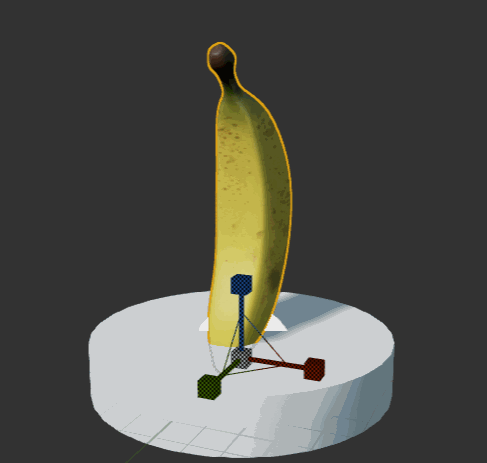
Теперь нужно сделать так, чтобы поворотный стол вращался. И здесь нам потребуются ноды Blueprint.
В отличие от своих близких родственников — нодов материалов — ноды Blueprint имеют особые контакты, называемые контактами Execution. Контакт слева — это вход, контакт справа — выход. У всех нодов есть хотя бы по одному входу и выходу.
Если нод имеет контакт входа, то его нужно подключить, чтобы он заработал. Если нод не поключен, все последующие ноды не будут выполняться.
Вот пример:
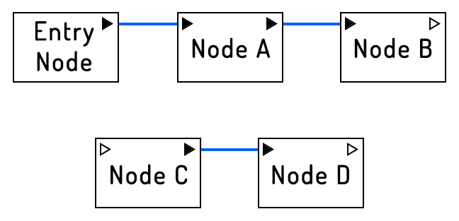
Node A и Node B будут выполняться, потому что у их входных контактов есть подключение. Node C и Node D никогда не выполняются, потому что входной контакт Node C не имеет подключения.
Прежде чем начать, давайте посмотрим на панель Components. Можно заметить, что у Cylinder и Static Mesh есть отступ, а у DefaultSceneRoot — нет, потому что они подключены к DefaultSceneRoot.
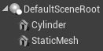
Если переместить, повернуть или отмасштабировать корневой компонент, то тоже самое произойдёт и с прикреплёнными к нему компонентами. Благодаря этому поведению можно поворачивать Cylinder и Static Mesh одновременно, а не по отдельности.
Чтобы приступить к созданию скриптов, переключитесь назад на вкладку Event Graph.
Реализация вращения объекта настолько проста, что требует всего одного нода. Нажмите правой клавишей на пустое пространство в графе, чтобы открыть меню доступных нодов. Найдите AddLocalRotation. Нам нужно поворачивать основание и банан, поэтому мы просто будем вращать корневой компонент. Выберите AddLocalRotation (DefaultSceneRoot).
Примечание: если нода нет в списке, снимите флажок Context Sensitive в правом верхней части меню.
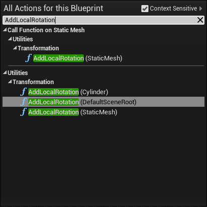
В вашем графе теперь появится новый нод AddLocalRotation. Вход Target автоматически подключится к выбранному компоненту.
Чтобы задать значение вращения, перейдите к входу Delta Rotation и измените значение Z на 1.0. Благодаря этому Blueprint сможет выполнять вращение относительно оси Z. Чем выше значения, тем быстрее будет вращаться стол.
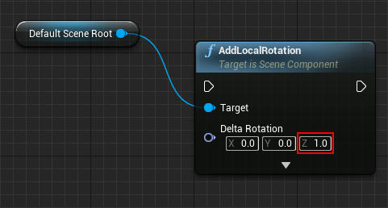
Чтобы поворотный стол вращался постоянно, нужно вызывать AddLocalRotation в каждом кадре. Для выполнения нода в каждом кадре воспользуемся нодом Event Tick. Он уже находится в графе. Если его нет, то создайте его тем же способом, что и ранее.
Перетащите выходной контакт нода Event Tick ко входному контакту нода AddLocalRotation.

Примечание: в этой реализации скорость вращения зависит от частоты кадров. Это значит, что поворотный стол на медленных компьютерах будет вращаться с меньшей скоростью, и наоборот. Для туториала это нас вполне устраивает, потому что я не хочу ничего усложнять, но в будущем я покажу, как это исправить.
Наконец, перейдите в Toolbar и нажмите на Compile, чтобы обновить Blueprint, а затем закройте Blueprint editor.

Прежде чем добавлять Blueprint, вернитесь ко Viewport в основном редакторе и удалите модель банана. Для этого выберите модель, а затем выберите Edit\Delete или нажмите клавишу Delete.
Добавление Blueprint — это тот же процесс, что и добавление меша. Удерживайте левую клавишу мыши на файле и перетащите его во Viewport.
Перейдите к Toolbar и нажмите Play, чтобы увидеть результаты своих трудов!
Примечание: если вы не удалите исходную модель банана, то можете получить предупреждение о необходимости перестройки освещения. Если удалить модель, то ошибка больше не будет проявляться.